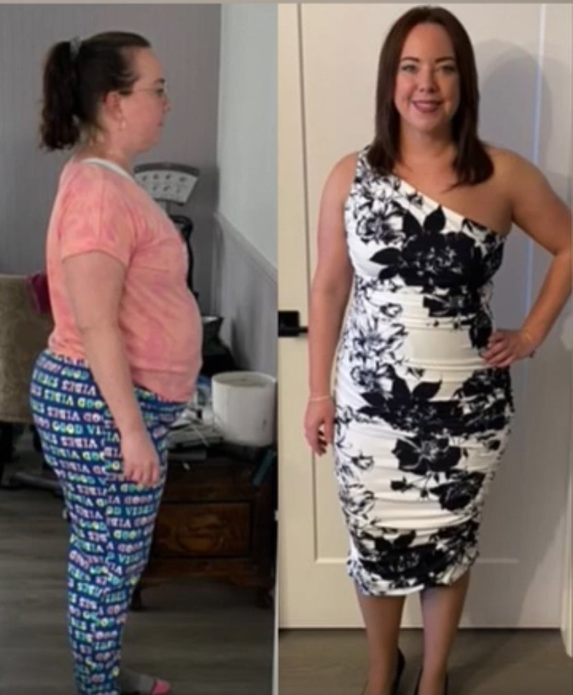

Hi, I'm Romiko
I help women business owners lose their first 20lbs in 6 weeks
Real women.
Real results.
48 real messages from people who followed my advice. Here's what they said to me. Word for word.

Lost 40lbs
“You've helped me so much. I am down a total of 40lbs.”
“You've helped me so much. I am down a total of 40lbs.”